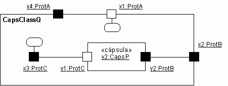
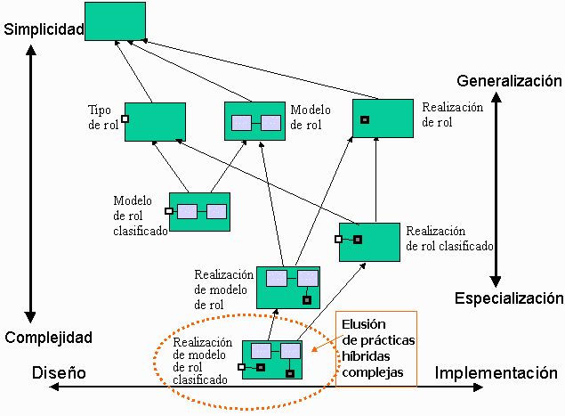

| Directriz: Cápsula |
 |
|
| Elementos relacionados |
|---|
TemasPuertosComo los puertos se encuentran en el límite de una cápsula, pueden ser visibles desde fuera y desde dentro de la cápsula. Cuando se visualizan desde el exterior, todos los puertos presentan la misma interfaz de objeto impenetrable y no se pueden diferenciar excepto por su identidad y el rol que juegan en el protocolo. Sin embargo, cuando se visualizan desde la cápsula, encontramos que los puertos pueden ser de dos tipos: puertos de relé y puertos finales. Se diferencian en las conexiones internas - los puertos de relé están conectados a subcápsulas mientras que los puertos finales están conectados a la máquina de estado de la cápsula. Generalmente, los puertos de relé sirven para exportar de forma selectiva las "interfaces" de subcápsulas internas mientras que los puertos finales son objetos de límite para la máquina de estado de una cápsula. Tanto los puertos de relé como los puertos finales pueden aparecer en el límite de la cápsula y, tal como se ha indicado, no se pueden distinguir desde el exterior. Puertos de reléLos puertos de relé son puertos a través de los cuales simplemente pasan todas las señales. Proporcionan una apertura en el shell de encapsulación de una cápsula que pueden utilizar las subcápsulas para comunicar con el exterior sin exponerse realmente al mundo exterior (y viceversa). Un puerto de relé está conectado, mediante un conector, a una subcápsula y normalmente también está conectado desde el exterior a alguna otra cápsula "igual". Reciben señales que provienen de ambos lados y simplemente las transmiten al otro lado manteniendo la dirección del flujo de señal. Esto se obtiene sin retrasos ni pérdida de información a menos que no haya ningún conector conectado en el otro lado. En este último caso, la señal se pierde. Los puertos de relé permiten la delegación directa (sin retraso) de las señales destinadas de una cápsula a una subcápsula sin necesitar la intervención de la máquina de estado de la cápsula. Los puertos de relé sólo pueden aparecer en el límite de una cápsula y, como consecuencia, siempre tiene visibilidad pública. Puertos finalesPara que resulte útil, una cadena de conectores debe terminar en un puerto final que comunique con una máquina de estado. Los puertos finales son objetos de límite para las máquinas de estado de cápsulas (aunque, como veremos, algunos de ellos también sirven como objetos de límite para cápsulas). Los puertos finales son los últimos orígenes y disipadores de todas las señales enviadas por las cápsulas. Estas señales se generan con las máquinas de estado de las cápsulas. Para enviar una señal, la máquina de estado invoca una operación enviar o llamar en uno de los puertos finales. La señal, entonces, se transmite a través del conector, posiblemente pasando a través de uno o más puertos de relé y conectores encadenados, hasta que encuentra finalmente otro puerto final, que suele estar en una cápsula diferente. Como la comunicación basada en señales puede ser asíncrona, un puerto final tiene una cola para mantener los mensajes que se han recibido pero que todavía no se han procesado en la máquina de estado (es decir, actúa como buzón de entrada). La recepción de la señal y la distribución de la máquina de estado receptora se efectúa con la máquina de estado según la semántica UML estándar. Como los puertos de relé, los puertos finales pueden aparecer en el límite de una cápsula con visibilidad pública. Estos puertos se denominan puertos públicos finales. Estos puertos son objetos de límite de la máquina de estado y de la cápsula que los contiene. Sin embargo, los puertos finales también pueden aparecer completamente dentro de la cápsula como parte de la estructura de implementación interna. Las máquinas de estado utilizan estos puertos para comunicar con sus subcápsulas o con capas de soporte de implementación externas. Estos puertos finales internos se denominan puertos finales protegidos ya que tienen una visibilidad protegida. Tenga en cuenta que el tipo de puerto está totalmente determinado por la conectividad interna y su visibilidad fuera de la cápsula; los diferentes términos (puerto de relé, puerto público final, puerto privado final) son meramente terminología abreviada. Un puerto público que no esté conectado internamente se puede convertir en un puerto de relé o en un puerto final dependiendo de cómo esté conectado, o si puede mantenerse desconectado y ser un disipador de las señales entrantes. Visibilidad de puertoDesde un punto de vista externo, un puerto es un puerto. No es posible ni deseable determinar si un puerto es un puerto de relé o un puerto final. Sin embargo, cuando se muestra la descomposición de una cápsula, podemos ver el interior de la cápsula y la distinción entre puerto final/puerto de relé se indica gráficamente, tal como se muestra a continuación.  Notación de puerto - diagrama de comunicación (vista interna) Desencadenantes basados en puertosA la práctica, suele ocurrir que dos o más puertos de la misma cápsula utilizan el mismo protocolo pero son semánticamente diferentes. Asimismo, la misma señal puede aparecer en más de un rol de protocolo compatible en los diferentes puertos de una cápsula. En ambos casos, será necesario distinguir el puerto final específico que ha recibido la señal actual. Esto permite que las aplicaciones manejen la misma señal de forma diferente dependiendo del origen de la señal y del estado. Se hace referencia a este tipo e desencadenante como desencadenante basado en puerto. Los desencadenantes basados en puerto se modelan en UML mediante condiciones de vigilancia que comprueban un puerto de origen concreto. Máquinas de estadoLa especificación de la máquina de estado parte de una cápsula así como la especificación de unas secuencias de protocolo válido se efectúa mediante las máquinas de estado UML estándar. Servicio de tiempoComo se puede esperar, en la mayoría de sistemas de tiempo real, el tiempo es una preocupación de primer orden. En general, deben modelarse dos formas de situaciones basadas en el tiempo: la posibilidad de desencadenar tareas a una hora del día concreta, y la posibilidad de desencadenar tareas después de que un cierto intervalo haya pasado a partir de un momento determinado. La mayoría de sistemas en tiempo real requieren un recurso de tiempo explícito y accesible directamente (controlable) - un servicio de tiempo. Este servicio, al que se puede acceder a través de un puerto estándar (punto de acceso a servicio), convierte el tiempo en sucesos que pueden manejarse del mismo modo que otros sucesos basados en el tiempo. Por ejemplo, con este servicio, una máquina de estado puede solicitar que se le notifiquen con un suceso de "tiempo de espera" cuando se haya alcanzado una hora del día concreta o cuando haya pasado un intervalo concreto. Taxonomía de cápsulasLas cápsulas son un concepto que se puede utilizar de diferentes modos. Para reflejarlo, se puede describir una jerarquía de cápsulas y una taxonomía para cubrir los usos comunes de las cápsulas.  Taxonomía de cápsula que muestra la jerarquía de generalización La taxonomía básica de cápsula es:
Existen tres híbridos útiles de estos tipos básicos, que representan combinaciones de las definiciones básicas:
Los tipos de cápsulas restantes, la 'realización de modelo de rol clasificado', que define la estructura y la interfaz, además del comportamiento en el abstracto (para la interfaz) y en lo específico (para la estructura interna) es complejo y puede ser difícil de comprender, y de implementar correctamente. Se menciona para los casos en que las pruebas de unidad de la cápsula necesitan definirse como parte de la misma cápsula, por consiguiente, las dos máquinas de estado separadas. En la mayoría de casos, es mejor evitar esta construcción. Representación UML 2.0Tenga en cuenta que la representación actual de RUP para cápsulas se basa en la notación UML 1.5. La mayor parte de esto se puede representar en UML 2.0 mediante Concepto: Clase estructurada.
Consulte Diferencias entre UML 1.x y UML 2.0 para obtener más información. |
© Copyright IBM Corp. 1987, 2006. Reservados todos los derechos. |